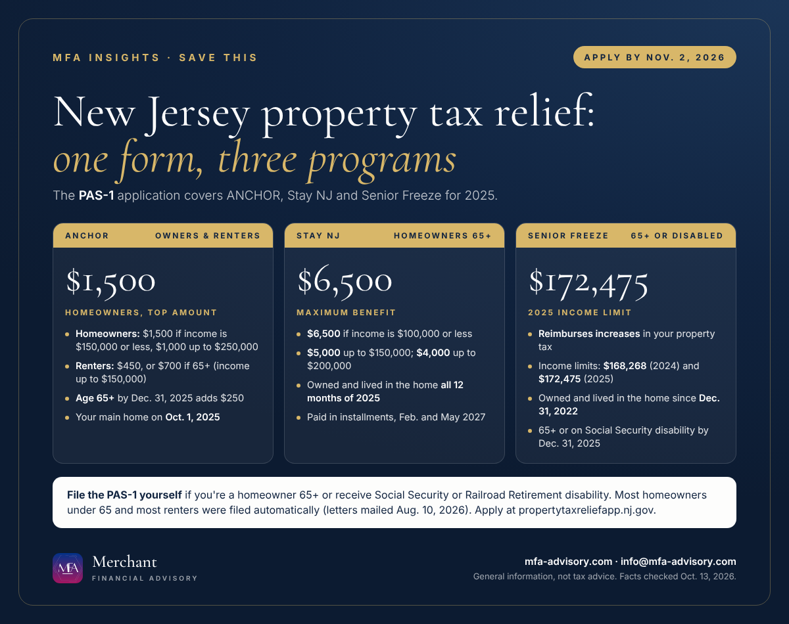

Executive summary
- Deadline: Monday, Nov. 2, 2026. One form, the PAS-1, now covers all three New Jersey property tax relief programs for 2025: ANCHOR, Stay NJ and Senior Freeze.
- ANCHOR pays up to $1,500 to homeowners with income up to $250,000, and $450 to renters with income up to $150,000. Anyone 65 or older by Dec. 31, 2025 gets $250 more.
- Stay NJ pays up to $6,500 to homeowners 65 and older with income up to $200,000 who owned and lived in their home all of 2025.
- Homeowners 65+ must file themselves. So must anyone receiving Social Security or Railroad Retirement disability. The state filed automatically for most homeowners under 65 and most renters.
Bottom line: If you're a New Jersey homeowner 65 or older, or on disability, file the PAS-1 before Nov. 2. It's the only way to get any of these benefits.
ANCHOR deadline 2026: Monday, Nov. 2, 2026 is the last day to apply, and it's also the deadline for Stay NJ and Senior Freeze. New Jersey now uses a single application, the PAS-1, for all three programs. If you qualify for more than one, one filing claims them all. Here's who qualifies, what each program pays, and who has to act before the deadline.

What the PAS-1 form covers
The PAS-1 form (Application for Combined Property Tax Relief) replaced the separate ANCHOR and Senior Freeze applications. It claims the 2025 benefits for ANCHOR, Stay NJ and Senior Freeze in one go. You can file online at propertytaxreliefapp.nj.gov or on the paper booklet the Division of Taxation began mailing in February 2026. After you file, the state calculates each benefit you qualify for and sends one statement listing all three.
NJ ANCHOR program 2026: who qualifies and how much
ANCHOR (Affordable New Jersey Communities for Homeowners and Renters) is for people who owned or rented their main home on Oct. 1, 2025. Income means line 29 of your 2025 NJ-1040. The home generally had to be subject to property tax. Homes that are fully exempt don't qualify, though renters in P.I.L.O.T. units can.
| Who | 2025 income (NJ-1040, line 29) | ANCHOR benefit amount |
|---|---|---|
| Homeowner | $150,000 or less | $1,500 |
| Homeowner | $150,001 to $250,000 | $1,000 |
| Renter, 64 or younger | $150,000 or less | $450 |
| Renter, 65 or older | $150,000 or less | $700 |
Applicants who were 65 or older by Dec. 31, 2025 receive an additional $250; for renters, that's already in the $700. Homeowners with income above $250,000 and renters above $150,000 don't qualify.
Stay NJ application: up to $6,500 for homeowners 65 and older
Stay NJ is the newest program. To qualify for the 2025 benefit, you (or your spouse) must have been 65 or older during 2025, and you must have owned and lived in the home for all 12 months of 2025. Your income can't exceed $200,000. Renters and mobile home owners aren't eligible.
| 2025 income | Maximum Stay NJ benefit |
|---|---|
| $100,000 or less | $6,500 |
| $100,000.01 to $150,000 | $5,000 |
| $150,000.01 to $200,000 | $4,000 |
These are annual maximums and depend on the state budget. The 2025 Stay NJ benefit is paid in installments in February and May 2027. There's no separate Stay NJ application: you claim it on the same PAS-1.
Senior Freeze income limits and rules
Senior Freeze (Property Tax Reimbursement) pays back increases in your property tax, so your bill is effectively frozen at a base year. To qualify for 2025:
- You were 65 or older on Dec. 31, 2025, or receiving your own federal Social Security or Railroad Retirement disability benefits by then.
- You have owned and lived in the home since Dec. 31, 2022 or earlier, and still did on Dec. 31, 2025.
- Your total income was $168,268 or less in 2024 and $172,475 or less in 2025. If you're married or in a civil union and live together, combine both incomes.
- The property is subject to property taxes on both land and improvements.
Do I need to file the PAS-1 myself?
It depends on your age and benefits:
- You must file: homeowners (and mobile home owners) 65 or older, and anyone receiving Social Security or Railroad Retirement disability benefits. The state doesn't file automatically for you, even if you only qualify for ANCHOR.
- Probably already filed for you: most eligible homeowners under 65 and most renters of any age. The state mailed ANCHOR Benefit Confirmation Letters on Aug. 10, 2026. If you're eligible and didn't get one, you can file the application yourself.
How to apply before the Nov. 2, 2026 deadline
- Have your 2025 NJ-1040 handy. Line 29 income drives eligibility for ANCHOR, and the application includes an income worksheet.
- File online at propertytaxreliefapp.nj.gov, or mail the paper PAS-1 booklet.
- Watch for your benefit letter. The Division of Taxation sends PAS-1 filers a letter with their calculated amounts.
- Add the deadline to your calendar with the buttons below so it doesn't slip.
New York homeowners: the NY STAR credit
New York has no PAS-1 or ANCHOR equivalent. Its main school-tax relief for homeowners is STAR. The Basic NY STAR credit has no age requirement and is for owners whose combined resident income is $500,000 or less. Enhanced STAR is for owners 65 and older: for 2026 benefits, combined income must be $110,750 or less, based on your 2024 return. Starting in 2026, only one resident owner needs to be 65 or older by Dec. 31 of the benefit year. You register for STAR with the New York State Department of Taxation and Finance.
FAQs
Monday, Nov. 2, 2026. That's the deadline to file the PAS-1 for 2025 ANCHOR, Stay NJ and Senior Freeze benefits.
$1,500 for homeowners with income of $150,000 or less, $1,000 for homeowners with income from $150,001 to $250,000, $450 for renters 64 or younger and $700 for renters 65 or older with income up to $150,000. Homeowners 65 or older get an extra $250.
No. Stay NJ is claimed on the same PAS-1 form as ANCHOR and Senior Freeze.
$168,268 or less for 2024 and $172,475 or less for 2025, combined for married or civil union couples living together.
If you're eligible but didn't receive the Aug. 10, 2026 confirmation letter, file the application yourself at propertytaxreliefapp.nj.gov before Nov. 2, 2026.
Merchant Financial Advisory (MFA), an accounting, tax and business solutions provider in Princeton, New Jersey, helps individuals and small and mid-sized businesses in New Jersey, New York and nationwide claim what they're owed. See our tax preparation and planning services, our 2027 tax calendar and our year-end tax planning guide, or book a call below.
Save the key dates
- Mon, Nov 2, 2026NJ: PAS-1 deadline for ANCHOR, Stay NJ and Senior Freeze (2025 benefits) Homeowners 65+ and Social Security or Railroad Retirement disability recipients must file the PAS-1 themselves. Apply at propertytaxreliefapp.nj.gov.
Add to calendar
Subscribe to every MFA key date
"Add all these dates" downloads one file that opens in Apple Calendar, Outlook or Google Calendar (in Google, use Settings, then Import). Subscribing works with Apple, Google and Outlook and updates itself whenever we publish a new deadline.
Get key tax dates and new articles by email
Every new MFA Insights article, the IRS, New Jersey and New York deadlines that matter, and a calendar you can save. For individuals and small and mid-sized businesses.
Almost done: check your inbox and click the confirmation link to join MFA Insights. (If you don't see it in a minute, check Promotions or Spam.)
Have a question about this?
Ask us privately. Your question goes straight to our inbox, not onto the page, and we reply by email within one to three business days. Please don't include Social Security or account numbers.
Thanks, your question is in. We'll reply by email within one to three business days.
Sources
- NJ Treasury: PAS-1 combined property tax relief application (Feb. 2026 announcement)
- NJ Treasury: PAS-1 Application for Combined Property Tax Relief
- NJ Division of Taxation: ANCHOR Program
- NJ Division of Taxation: ANCHOR eligibility
- NJ Division of Taxation: How ANCHOR benefits are calculated
- NJ Division of Taxation: Stay NJ Property Tax Credit Program
- NJ Division of Taxation: Senior Freeze (Property Tax Reimbursement)
- NJ Division of Taxation: Senior Freeze eligibility
- NY Tax Department: STAR eligibility
- NY Tax Department: It's getting easier to qualify for STAR
Facts checked against the sources above as of October 13, 2026. This article is general information, not tax, legal, or financial advice, and reading it does not create a client relationship. Tax rules change and every situation is different; confirm the details for your situation with a qualified professional before acting.